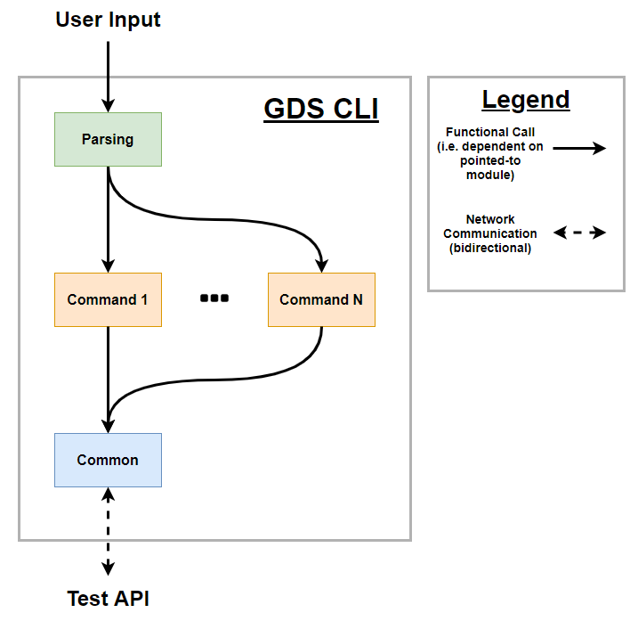
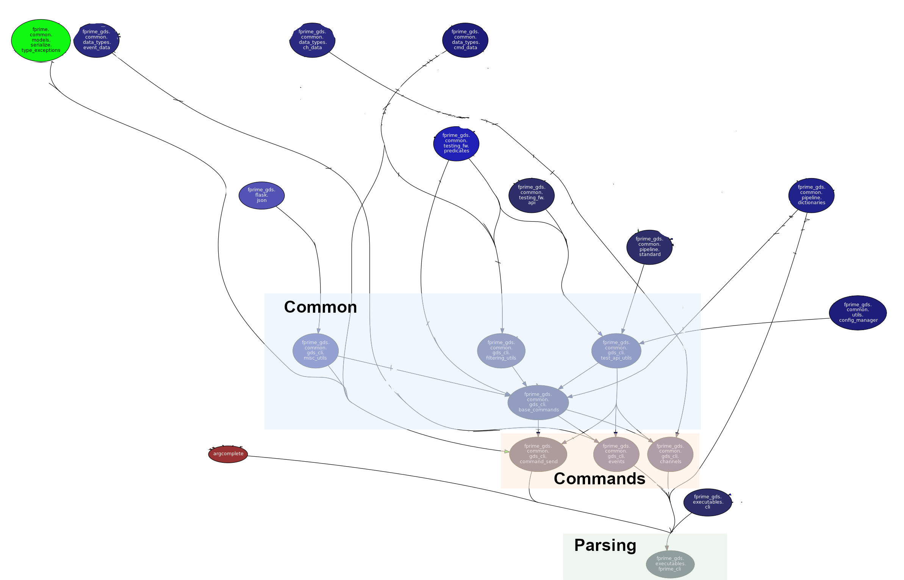
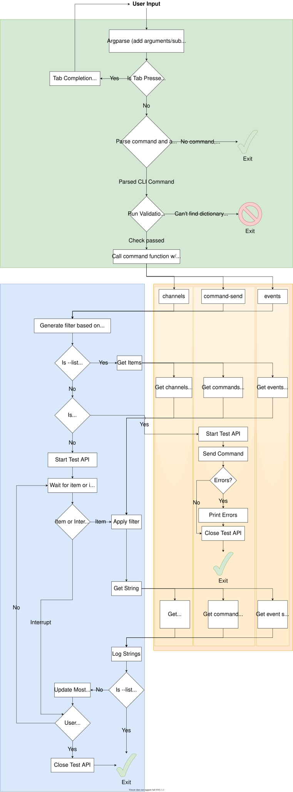

GDS Developer's Guide
This guide is for programmers who intend to maintain and develop code for the Ground Data System's command-line interface suite. For regular users who just want to use these CLI tools, please see the user guide.
CLI Requirements
Primary Requirements
- Overall goal is to provide a command-line interface for interacting with the F´ Ground Data System (GDS), which can be used entirely in place of the GDS GUI
- At a minimum, the CLI tools should allow for receiving all events/telemetry data from the GDS and sending commands to the spacecraft
- The CLI tools' output must be usable with existing UNIX utilities through piping/file output/BASH scripting/etc.
- The CLI tools should be multi-platform, supporting (at a minimum) Linux, Mac, and Windows systems
- If implemented in Python, must support Python 3.6+
Secondary Requirements
- Feature parity should be maintained between the GDS GUI and the GDS CLI tools as far as possible
- Tools should be performant (finish executing in <100ms unless explicitly waiting for new data)
- CLI tools should work "out of the box" with minimal or no setup/configuration
- GDS CLI options/names/operations should be consistent with the GDS GUI first, then with other F´ CLI tools, then with other UNIX conventions
- Should be installable through a single pip command
- Should support tab completion
- Number of 3rd-party dependencies should be kept to a minimum
- Should adhere to an MVC architecture, with parsing/printing separated from business logic
Architecture
Intended

The intended architecture for the CLI is:
- A single
Parsingmodule (if possible, a single file) which handles all argument parsing for the CLI tool; it determines what command was called and what arguments were provided to it - The actual command code is executed in a
Commandmodule; each CLI command has its own, independent module to handle execution - Any shared code between these modules is refactored into the
Commonmodule (notably, no direct calls should be made to the API from aCommandmodule without going through aCommoninterface first)
The CLI will interact with the GDS through an appropriate API, which the CLI modules access through an interface in Common. While the REST API was initially targeted, we later decided to transition to the Integration Test API for now due to its filtering capabilities.
As Implemented
Not including imports used only for type hints, or dependencies for modules not part of the GDS CLI source code (generated using pydeps:

Note
The above graph has arrows pointing to the module that does the importing and away from the dependency, and does not include Python standard library imports.
- All parsing is handled in
fprime_cli, which imports the command modules and several external libraries to help with parsing. - Each command is implemented separately, but shares a large portion of its code with other modules via the
Commonmodule files, as well as importing the appropriate GDS data type for the type of data it's working with (and, in the case ofcommand_send, an appropriate exception). - The
Commonmodule is actually made up of several distinct, independent submodules containing related groups of common code. These import a variety of other GDS modules to help provide all necessary functionality; in particular, thetesting_fw.apiIntegration Test module is used to access the GDS.
Dataflow

Dependencies
External Dependencies (installed via setup.py):
- argcomplete - Used to implement tab completion
Internal Dependencies (i.e. Other F´ modules)
- Integration Test API - Used to get data from and send commands to the GDS and filter incoming data via the included predicates
common/pipelineandcommon/utils- Used to initialize the Test API;pipeline.dictionariesalso used to get a list of available commands/events/channels- GDS Data Types in
common/data_types- Used to handle incoming GDS data and for printing output fprime_gds/flask/json.py- Used for the--jsonprinting flag implementationexecutables/cli.py- Used to automatically search for a dictionary file while parsing
Important Python stdlib Dependencies:
argparse- Used to handle parsing user input
Source Files
Parsing files (in executables)
- fprime_cli.py - Handles user input to the CLI tools via Python's
argparselibrary; defines a base class for parsing and a subclass for each command. Usesargcompleteto handle tab completion if it's enabled,cli.pyto search for a dictionary file, and then executes the appropriate command's function.
Command files (in common/gds_cli):
- channels.py - Displays and filters received telemetry channel data. Handles printing and listing data; most functionality comes from
base_commands.py. - command_send.py - Sends a given command to the GDS and prints an appropriate error message if this fails, and prints available commands. Filtering functionality comes from
base_commands.py. - events.py - Displays and filters received telemetry channel data. Handles printing and listing data; most functionality comes from
base_commands.py.
Common files (in common/gds_cli):
- base_commands.py - Defines a base class for implementing commands with logging, and a child class for receiving and filtering GDS data
- test_api_utils.py - Defines functions for initializing the Integration Test API and receiving data from the API
- filtering_utils.py - Defines classes and functions used to filter GDS data using the Integration Test API's predicates
- misc_utils.py - Any other functions used by multiple CLI commands that haven't been categorized (currently includes string formatting functions and shared datatypes for CLI arguments)
Tests
The GDS CLI tests can be found at Gds/test/fprime/common/gds_cli, and currently includes 2 unit test files:
filtering_utils_test.pytests that filtering lists and GDS data work as expectedutils_test.pytestsmisc_utilsandtest_api_utilsfunctions, verifying that commands listening for data exit when interrupted, and that getting lists of items works successfully
Test coverage is fairly low; there are currently no integration tests for the CLI.
Code Quirks
fprime_cli.pyandmisc_utils.pyuse delayed/lazy importing to avoid slow performance from several particularly long imports- In particular,
fprime_gds/flask/json.pyandcommon/logger/test_logger.pyeach take 100ms+ to import - The script takes noticeably longer to run if the optional
openpyxlis installed since it's a slow import for the Test API
- In particular,
- While technically true for all GDS python code, the fast_entry_points script was used to improve startup speed
- Low startup times are especially important because tab completion re-runs the script each time tab is hit
- Code uses type hints, introduced in Python 3.5
- Commands don't bother initializing the Test API when passed the
--listoption for performance reasons - The parsing/command classes currently have all their functionality implemented on class methods and are never instantiated
- Printing uses
SysDataprinting methods, which means console output will change if thoseSysDatamethods change - When used for filtering, the
filtering_utilpredicates are called on entireSysDataobjects - New event/channel retrieval methods defined in
test_api_utilsinstead of using the Test API's existingawait_telemetry/etc. methods, since those only accept predicates filtering by time or one of the predefinedtelemetry_predicateorevent_predicatefields; defining our own methods lets us use any predicate that will accept aSysDataobject- This lets us also filter by component, printed strings, etc. at the cost of having slightly more complicated predicates
- The
searchfilter option doesn't take multiple arguments like the other filtering options (done to allow for multi-word string queries more easily, but might not be worth breaking the multiple-filter pattern of the other ones) - CLI filters are inclusive OR with themselves but exclusive to one another (e.g. passing multiple
idswill show all data with any of those ID types, but passing--idsand--searchwill only show data with those IDs AND having that search term) - MVC isn't strictly followed, since the base command class has a logging method for convenience (and since we have to print on data receipt), but parsing is separated from execution code
Future Work
Fixing Issues
- Getting tab completion to automatically install, rather than be user-activated (headache since the user has to source a script from
argcomplete) - Improve performance
- Fix the problem of just having
openpyxlinstalled slowing the script down because of import time - Test API is slow to shut down for some reason, due to a slow thread join
- Fix the problem of just having
- Create basic integration tests for each CLI tool to make sure they work successfully end-to-end
New Features
- Adding CLI tools for file uplink/downlink
- Extending tab completion to component names/opcodes/etc.
- Immediate value querying (i.e. ask what the value of a channel/etc. is now, instead of just recording updates)
- Nice-to-have, may not be possible with Integration Test API
- Having colored output to improve readability
- Talk to testers using the GDS to figure out useful quality-of-life features